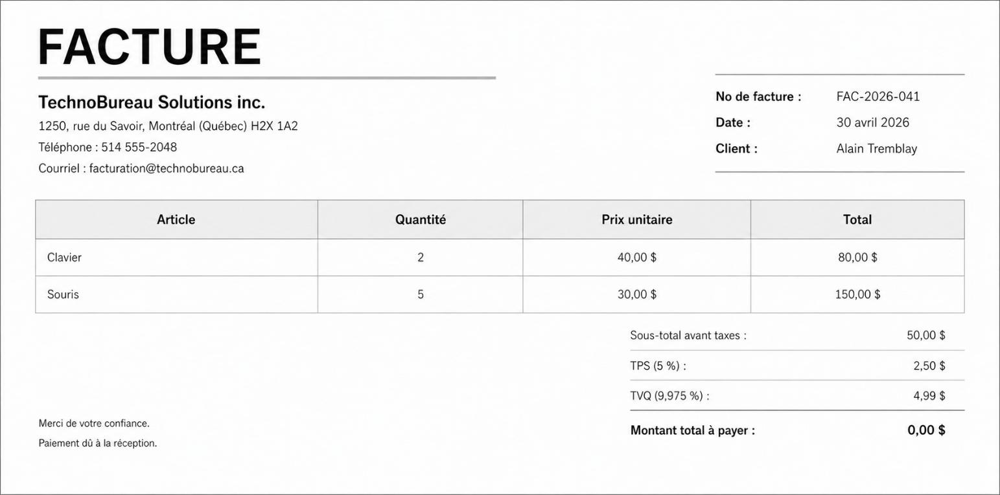
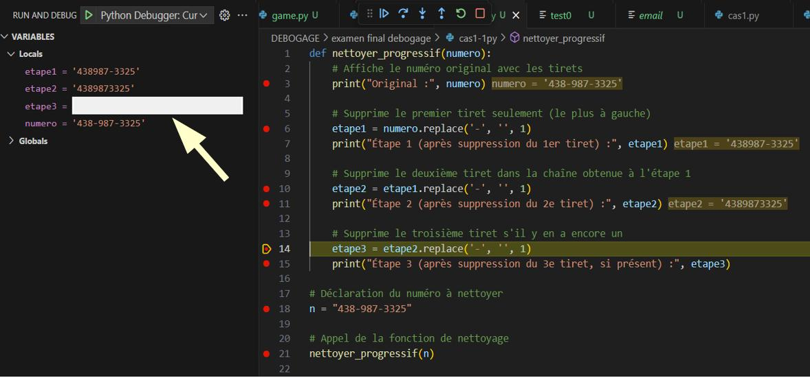
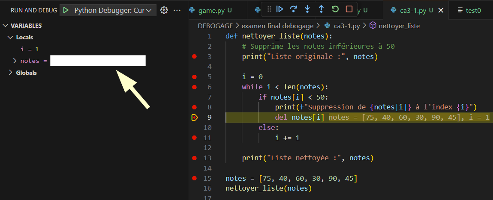
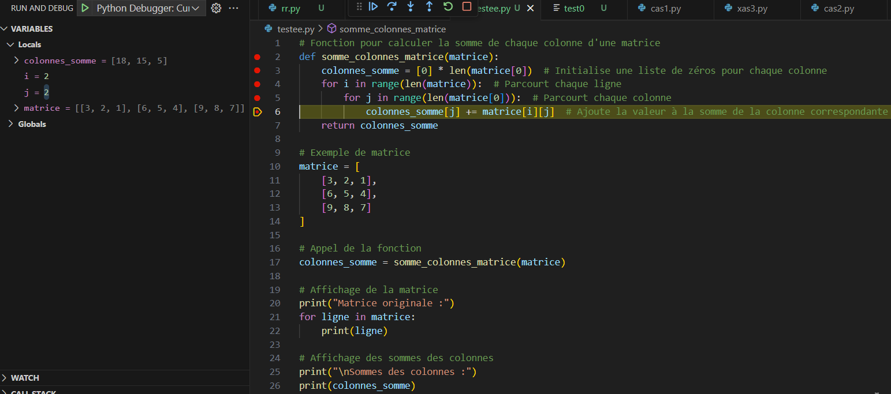
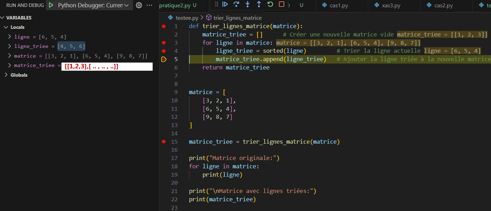
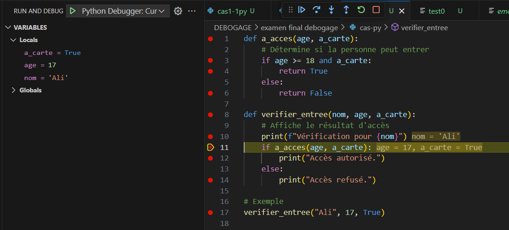
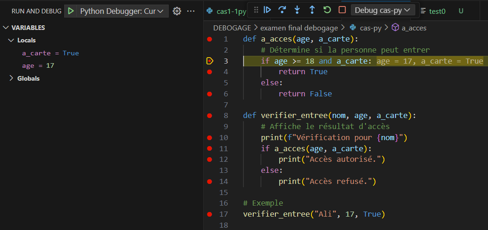
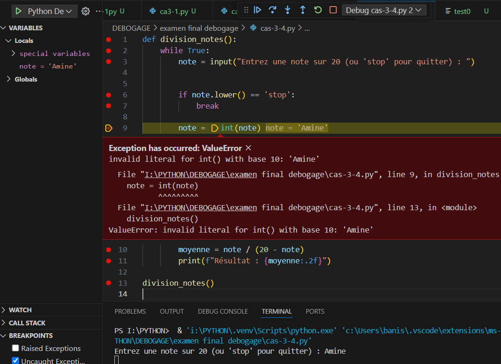
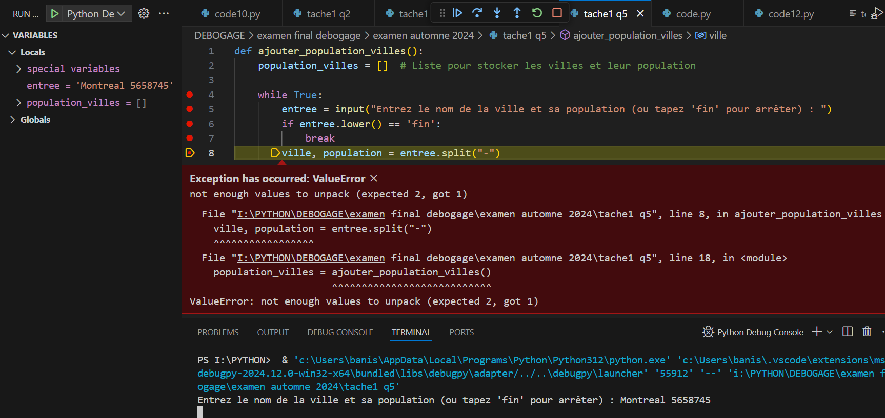

| PRÉNOM ET NOM : | DATE : | 12 mai 2026 | |
| N° D’ÉTUDIANT(E) : | GROUPE : |
| Durée de l’examen | 2h00 |
|---|---|
| Nombre de pages | 13 pages incluant celle-ci — version web formulaire |
| Publication | LÉA-Travaux > Évaluations — Examen final débogage hiver 2026 |
| Code d’accès utilisé | Code non validé |
| Heure d’activation du code | Heure non validée |
| Parties de l’examen |
|
| Modalités de l’évaluation | Examen réalisé individuellement. L’étudiant doit inscrire clairement son nom, son prénom et toute autre information demandée. Les réponses doivent être saisies directement dans les zones prévues. La qualité du français écrit peut être prise en compte dans la correction. Pour plus de détails, référez-vous au plan de cours. |
|---|---|
| Matériel autorisé | Stylo ou crayon si nécessaire pour brouillon personnel. Notes personnelles de l’étudiant autorisées selon les consignes données par l’enseignant. |
| Règles et matériel interdit | L’étudiant doit travailler seul, en silence, et respecter les consignes de l’enseignant. Toute communication avec un autre étudiant est interdite. Toute consultation de ressources non autorisées est interdite. Toute aide extérieure est interdite. Matériel interdit : téléphone cellulaire, tablette électronique, ordinateur portable non autorisé, montre intelligente, écouteurs, outils d’intelligence artificielle incluant ChatGPT, applications de communication comme WhatsApp ou Messenger, échange ou prêt de matériel entre étudiants. |
| Total | / 100 |
Alain est un nouveau programmeur dans une petite entreprise. Son responsable lui demande de créer un programme Python permettant de gérer une petite commande client.
Le programme doit demander à l’utilisateur les informations suivantes :
Ensuite, le programme doit calculer le montant total de la facture, vérifier si le client a payé suffisamment, puis afficher un résumé clair de la transaction.
Alain développe son programme dans Visual Studio Code. Comme il veut bien faire les choses, il écrit un programme assez long contenant plusieurs fonctions, des listes, des conditions et des calculs.
Après avoir terminé son code, Alain remarque que certaines instructions sont soulignées par Visual Studio Code. Il pense alors commencer immédiatement une phase de débogage pour comprendre pourquoi ces instructions sont soulignées.
Alain corrige les soulignements indiqués par Visual Studio Code. Son programme ne contient maintenant plus d’erreurs visibles.
Il lance le programme. Au début, tout semble fonctionner : le programme demande le nom du client, les produits, les prix et les quantités.
Cependant, au moment de faire les calculs, le programme s’arrête brusquement. Un message indique qu’il tente d’accéder à une position inexistante dans une liste.
Alain réussit ensuite à corriger le blocage. Le programme s’exécute maintenant jusqu’à la fin et affiche une facture.
En fait le programme affiche :

Le programme ne plante pas, mais le résultat ne plaît pas à Alain car trois produits ont été achetés et le montant total ne devrait pas être égal à zéro.
Alain a oublié les grandes étapes à suivre pour commencer une démarche de débogage.
Indiquez brièvement les principales étapes qu’il devrait suivre. Il n’est pas nécessaire de décrire les clics exacts dans Visual Studio Code. Expliquez plutôt la démarche générale.
Observez la capture d’écran du débogueur en cours d’exécution et identifiez la variable qui est sur le point d’être modifiée. Indiquez également quelle sera la nouvelle valeur de cette variable après l’exécution de la ligne de code en surbrillance.
Cas 1 :

Cas 2 :

Cas 3 :

Cas 4 :

Observez attentivement les deux extraits de code Python suspendus dans leur exécution par l’environnement de débogage. Analysez l’état des variables et la position actuelle du curseur du débogueur dans chaque extrait.
Préciser quelle ligne sera exécutée en suivant immédiatement dans chaque script.
Cas 5 :

Cas 6 :

Explique pourquoi une erreur de ce type peut survenir pour chaque programme en indiquant la cause précise de l’erreur et en proposant une solution simple pour l’éviter tout en conservant le fonctionnement du programme.
Cas 7 :

Cas 8 :

Cas 9 :
try:
with open('fichier_exemple.txt', 'r') as fichier:
contenu = fichier.read()
print(contenu)
except FileNotFoundError:
print("Erreur : Code 001")
except PermissionError:
print("Erreur : Code 002")
except Exception:
print("Erreur : Code 003")
L’utilisateur voit bien le fichier fichier_exemple.txt dans son dossier, mais lorsqu’il exécute le script, un message d’erreur s’affiche immédiatement sans même lire le contenu, et son ordinateur est configuré avec des restrictions qui limitent certaines actions sur les fichiers du système.
Cas 10 :
try:
with open('fichier_donnees', 'r') as fichier:
contenu = fichier.read()
except FileNotFoundError:
print("Erreur : Code 301")
except IsADirectoryError:
print("Erreur : Code 302")
except Exception:
print("Erreur : Code 303")
Quel message sera affiché ?
• Identifiez deux mots-clés spécifiques de Python utilisés pour la gestion des exceptions.
• En décrivant un exemple sur la conversion de chaînes de caractères en nombres entiers, expliquez l’utilité de ces mots-clés dans le cadre de la programmation robuste en Python.
Associez chaque extrait de code au type d’exception qui sera levé. Utilisez les choix suivants :
| a | b | c | d |
|---|---|---|---|
| TypeError | IndexError | NameError | ZeroDivisionError |
Extrait 1
def addition(x, y):
return x + y
resultat = addition("Bonjour", 5)
print(resultat)
Extrait 2
def afficher_element(liste, index):
return liste[index]
valeurs = [4, 5, 6]
print(afficher_element(valeurs, 5))
Extrait 3
valeurs = [8, 9, 3, 6, 4]
index = [5, 2, 6]
for i in range(len(valeurs)) :
print(valeurs[i]+index[i])
Extrait 4
valeurs = [] index = [5, 2, 6] nb = len(valeurs) moyenne = index[0] + index[2] / nb print(moyenne)
Important : la partie pratique ne se fait pas dans ce formulaire.
L’étudiant recevra le code Python et les tâches à faire sur LÉA-Travaux > Évaluations, dans l’évaluation nommée Examen final débogage hiver 2026.
Vous devez d’abord exporter ce formulaire en PDF, puis fermer complètement cet examen avant de commencer la partie pratique séparée sur LÉA.
| Élément évalué | Répartition précise | Points |
|---|---|---|
| Partie 1 - Situation 1 : 3.2 Repérage complet des erreurs. | Type d’erreur reconnu : erreurs de syntaxe, de saisie ou signalements détectés avant l’exécution (1 pt). Réponse attendue : non, ce n’est pas encore une vraie phase de débogage d’exécution (1 pt). Justification claire : le débogage sert surtout à analyser un programme qui s’exécute ou produit un mauvais comportement, alors que les erreurs de syntaxe doivent d’abord être corrigées (2 pts). | ____ / 4 |
| Partie 1 - Situation 2 : 3.2 Repérage complet des erreurs. | Erreur reconnue : erreur d’exécution liée à l’accès à une position inexistante dans une liste, de type IndexError ou équivalent (1 pt). Réponse attendue : oui, c’est une bonne raison de déboguer (1 pt). Justification claire : le programme démarre, mais s’arrête pendant l’exécution; le débogage permet de suivre les variables, les indices et le chemin exécuté (2 pts). | ____ / 4 |
| Partie 1 - Situation 3 : 4.2 Repérage complet des erreurs de fonctionnement. | Erreur reconnue : erreur logique ou erreur de calcul (1 pt). Réponse attendue : oui, c’est une bonne raison de déboguer (1 pt). Justification claire : le programme se termine, mais le résultat affiché est incohérent; le débogage permet de vérifier les valeurs intermédiaires et la logique du calcul (2 pts). | ____ / 4 |
| Partie 1 - Situation 4 : 3.1 Utilisation efficace du débogueur; 3.3 Détermination judicieuse de stratégies de correction des erreurs. | Réponse structurée contenant les étapes essentielles : reproduire le problème (1 pt), repérer la zone probable de l’erreur (1 pt), placer un point d’arrêt ou ralentir l’exécution (1 pt), exécuter pas à pas (1 pt), observer les variables et conditions (1 pt), corriger puis retester (1 pt). | ____ / 6 |
| Sous-total - Partie 1 | Comprendre quand utiliser le débogage et expliquer une démarche générale. | ____ / 18 |
| Partie 2 - Tâche 1, cas 1 à 4 : 3.1 Utilisation efficace du débogueur. | 4 cas × 2 pts. Pour chaque cas : variable correctement ciblée (1 pt) et nouvelle valeur correctement déduite après l’exécution de la ligne en surbrillance (1 pt). | ____ / 8 |
| Partie 2 - Tâche 1, cas 5 et 6 : 3.1 Utilisation efficace du débogueur. | 2 cas × 3 pts. Pour chaque cas : ligne suivante correctement identifiée (2 pts) et justification cohérente avec la logique d’exécution ou le flux du programme (1 pt). | ____ / 6 |
| Partie 2 - Tâche 1, cas 7 et 8 : 3.2 Repérage complet des erreurs; 3.3 Détermination judicieuse de stratégies de correction des erreurs. | 2 cas × 4 pts. Pour chaque cas : cause précise de l’erreur (2 pts), solution simple et pertinente (1,5 pt), conservation du fonctionnement attendu du programme (0,5 pt). | ____ / 8 |
| Partie 2 - Tâche 1, cas 9 et 10 : 3.2 Repérage complet des erreurs. | 2 cas × 3 pts. Pour chaque cas : bonne réponse cochée (2 pts) et compréhension implicite du type d’erreur ou du comportement Python (1 pt). | ____ / 6 |
| Partie 2 - Tâche 2 : 3.3 Détermination judicieuse de stratégies de correction des erreurs; 3.5 Notation claire des solutions aux problèmes rencontrés. | Deux mots-clés corrects, par exemple try et except (2 pts). Exemple pertinent avec conversion d’une chaîne en entier, par exemple int(...) (2 pts). Explication de l’utilité pour éviter l’arrêt du programme et redemander ou traiter l’entrée invalide (2 pts). | ____ / 6 |
| Partie 2 - Tâche 3 : 3.2 Repérage complet des erreurs. | 4 extraits × 2 pts. Chaque réponse associe correctement l’extrait au type d’exception attendu : TypeError, IndexError, NameError ou ZeroDivisionError. | ____ / 8 |
| Sous-total - Partie 2 | Analyse de captures, variables, curseur de débogage, erreurs et exceptions Python. | ____ / 42 |
| Total du barème objectif | ____ / 60 | |
| Compétence : Déboguer le code et tests fonctionnels. (40 points) | ||||||
|---|---|---|---|---|---|---|
| Critère d’évaluation | Maîtrise très insuffisante | Maîtrise faible | Maîtrise acceptable | Maîtrise bonne | Maîtrise très bonne | Note |
| Tâche : contrôles de saisie et validation des données utilisateur. Critères liés : 3.3 déterminations de stratégies de correction; 4.3 pertinences des correctifs. | Les contrôles de saisie sont absents ou inutilisables; le programme accepte des valeurs invalides sans les traiter. 0 | Quelques contrôles sont tentés, mais ils sont incomplets, mal placés ou ne redemandent pas correctement la saisie. 2 | Les contrôles principaux sont présents pour certaines valeurs; le programme redemande parfois la saisie, mais la validation reste partielle. 4 | Les contrôles sont globalement corrects; les valeurs importantes sont validées et les mauvaises saisies sont généralement redemandées. 7 | Les contrôles sont complets, cohérents et robustes; les prix, quantités et montants sont validés clairement, avec une logique stable. 10 | |
| Tâche : gestion des exceptions et prévention des erreurs d’exécution. Critères liés : 3.2 repérage complet des erreurs; 3.3 stratégies de correction; 4.2 repérages des erreurs de fonctionnement. | Aucun bloc try...except pertinent n’est présent; une saisie non numérique provoque encore l’arrêt du programme. 0 | Un bloc try...except existe, mais il est mal utilisé, trop limité ou ne protège pas les saisies importantes. 2 | La gestion des exceptions fonctionne dans des cas simples, mais certaines saisies invalides ou certains messages restent mal traités. 4 | La gestion des exceptions est correcte et protège les saisies principales contre les erreurs comme ValueError. 7 | La gestion des exceptions est rigoureuse, bien placée et bien expliquée; le programme reste stable même avec des entrées invalides répétées. 10 | |
| Tâche : assertions et tests d’intégrité du programme. Critères liés : 4.1 rigueurs; 4.5 notation claire de l’information relative aux tests et à leurs résultats. | Aucune assertion utile n’est ajoutée ou les assertions empêchent le fonctionnement normal du programme. 0 | Les assertions sont très partielles ou mal formulées; elles ne vérifient pas clairement les conditions demandées. 2 | Les assertions principales sont présentes, mais leur emplacement, leur message ou leur utilité restent partiellement maîtrisés. 4 | Les assertions demandées sont correctement intégrées et vérifient les conditions essentielles du programme. 7 | Les assertions sont pertinentes, lisibles et bien placées; elles vérifient clairement le total positif et la limite du nombre d’articles. 10 | |
| Tâche : fonctionnement global, pertinence des correctifs, lisibilité et commentaires. Critères liés : 3.4 pertinences des correctifs; 3.5 notation claire des solutions; 4.4 fonctionnement correct du programme. | Le programme ne fonctionne pas ou le script remis est très incomplet; les calculs de facture ne sont pas conservés. 0 | Le programme fonctionne seulement de manière très partielle; plusieurs erreurs, oublis ou modifications non pertinentes nuisent au résultat. 2 | Le programme fonctionne dans des cas simples; les calculs et l’affichage sont généralement présents, mais la finition reste inégale. 4 | Le programme fonctionne correctement dans la majorité des cas; les calculs, l’affichage et les commentaires sont clairs. 7 | Le programme est complet, stable, lisible et bien commenté; les correctifs respectent le script initial et améliorent réellement sa robustesse. 10 | |
| Note de compétence | ___ /40 | |||||
| Total général de l’examen (barème objectif + grille critériée) | ___ /100 | |||||